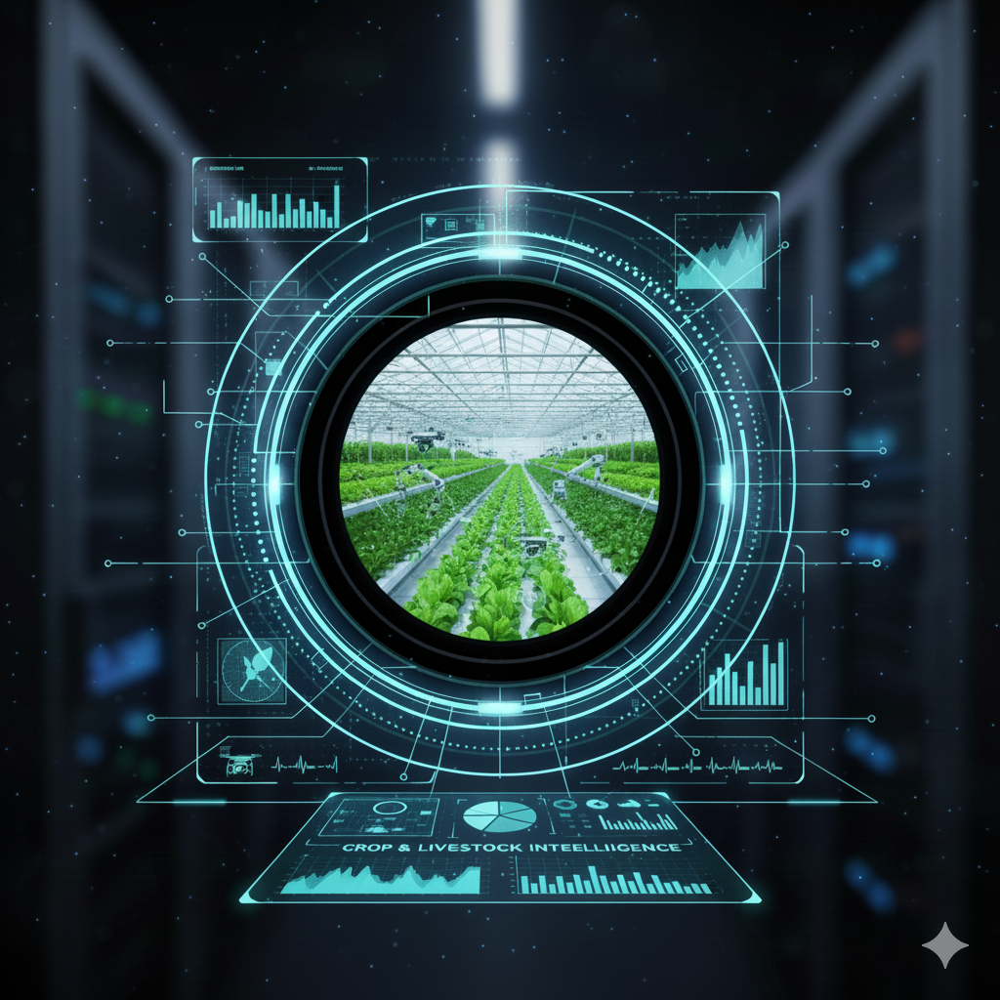
스마트 팜 & 농업 보안 Smart Farm & Agriculture Security
재배 구역 침입 감지, 장비 도난 방지, 작업 동선 분석 등으로 안정적인 농업 운영을 지원합니다. Detect intrusions, prevent equipment theft, and analyze worker routes to support secure and efficient farm operations.
퓨텍솔루션즈는 다양한 산업 환경에서 요구되는 보안·안전·운영 효율화 시나리오를 AI 기반 영상분석 기술로 지원합니다. Futec Solutions supports security, safety and operational efficiency use cases across a wide range of industries using AI-powered video analytics.

재배 구역 침입 감지, 장비 도난 방지, 작업 동선 분석 등으로 안정적인 농업 운영을 지원합니다. Detect intrusions, prevent equipment theft, and analyze worker routes to support secure and efficient farm operations.
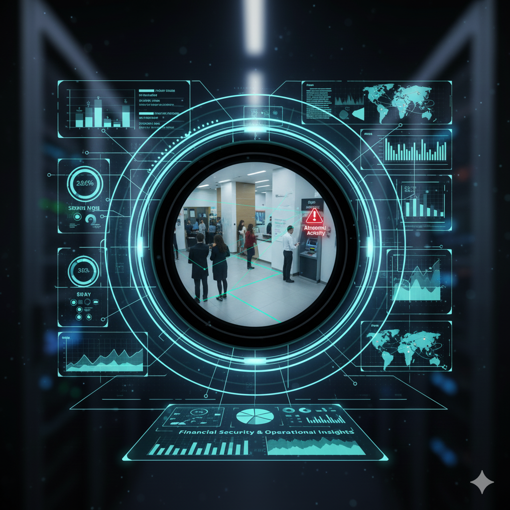
지점·ATM 주변 이상 행동 감지와 대기열 분석을 통해 금융 거래 환경의 안전과 고객 경험을 향상합니다. Detect abnormal behavior around branches and ATMs and analyze queues to improve safety and customer experience.

공원·주거 단지 등 생활 공간에서 위협 행동과 위험 상황을 실시간으로 모니터링합니다. Monitor threatening behavior and risk situations in parks and residential areas in real time.
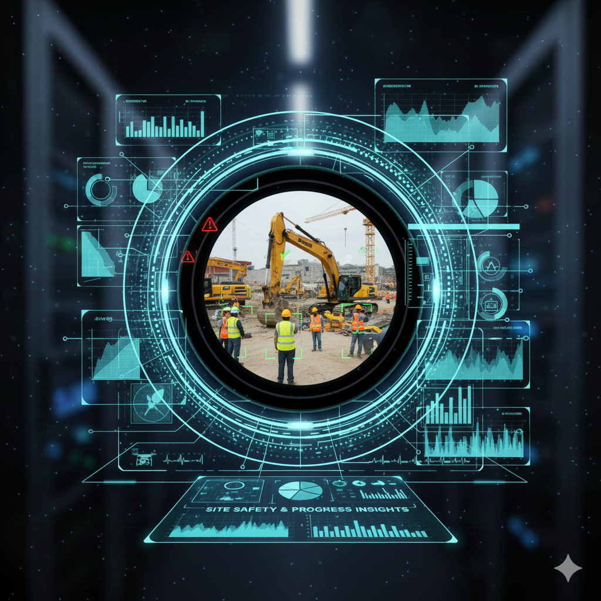
보호구 착용 여부, 출입 통제, 위험 구역 접근 등 산업안전 이슈를 사전에 감지합니다. Detect PPE compliance, access control issues, and risky zone approaches to prevent safety incidents.

교내 출입, 통학로, 기숙사 구역 등에서 학생·교직원의 안전을 입체적으로 보호합니다. Protect students and faculty across entrances, walkways and dormitory zones with integrated analytics.
공연장·경기장·이벤트 홀의 군중 흐름을 분석하고 혼잡·긴급 상황을 빠르게 식별합니다. Analyze crowd flows and quickly identify congestion or emergency situations in stadiums and event halls.
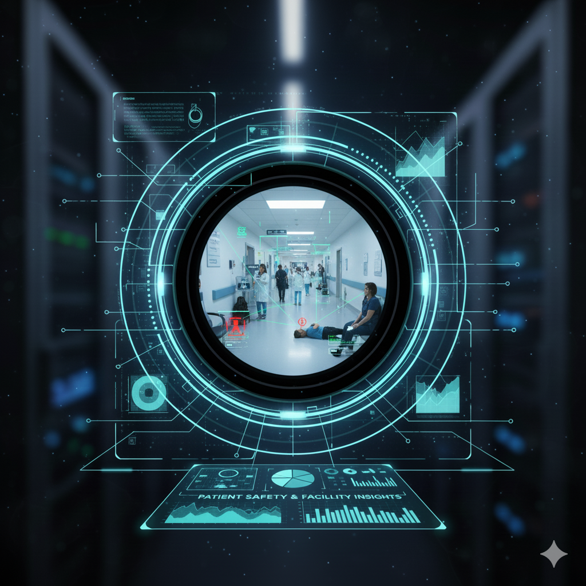
병실·중요 장비 구역·약품 보관소를 포함한 병원 전반에서 환자·직원의 안전과 자산을 보호합니다. Protect patients, staff and critical assets across wards, equipment rooms and medicine storage areas.

로비, 주차장, 객실층의 방문 패턴을 분석해 고객 경험과 운영 효율을 동시에 높입니다. Analyze visitor patterns in lobbies, parking lots and guest floors to enhance guest experience and efficiency.
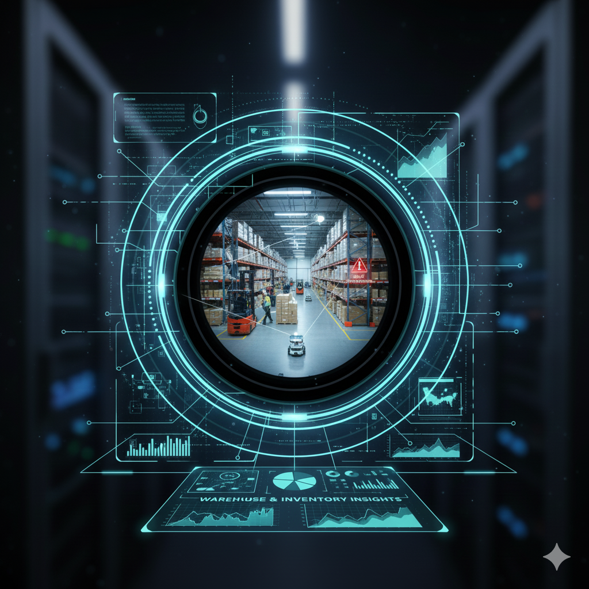
상·하차 구역, 피킹 존, 입·출고 라인을 모니터링하여 물류 생산성을 높이고 사고를 줄입니다. Monitor loading docks, picking zones and in/outbound lines to improve logistics productivity and reduce incidents.
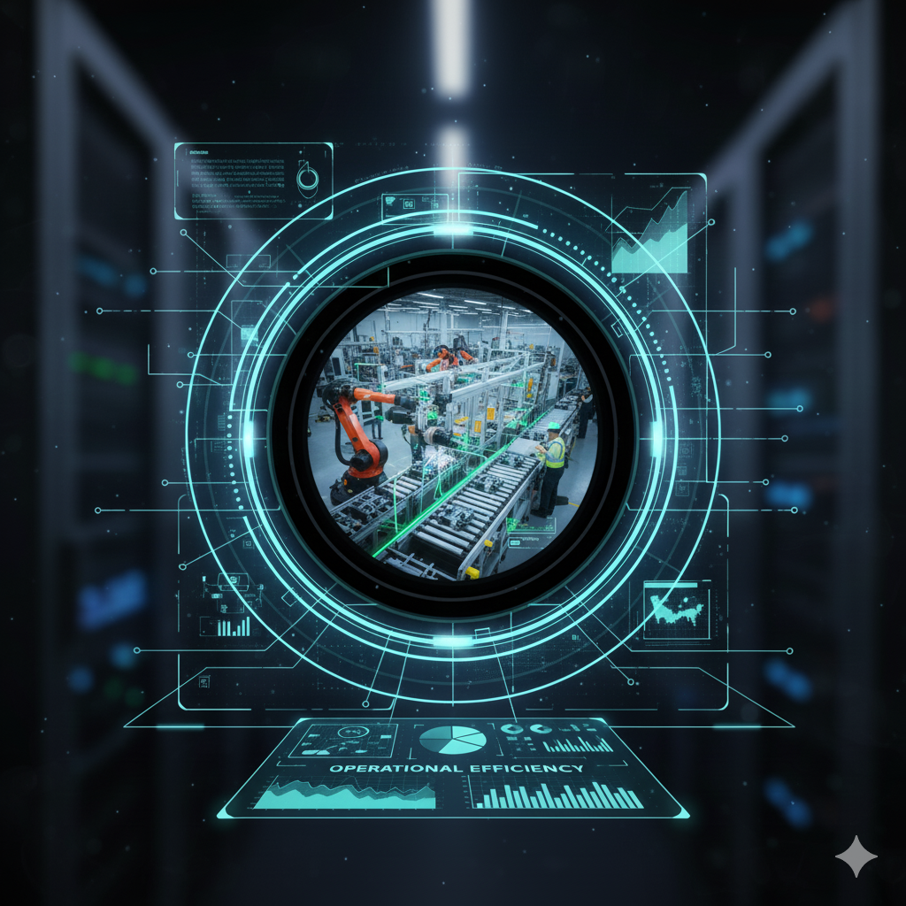
공정 구역, 위험 물질 보관소, 출입 관제 포인트를 통합 분석해 산업 안전 수준을 강화합니다. Analyze process areas, hazardous material storage and access points to strengthen industrial safety.
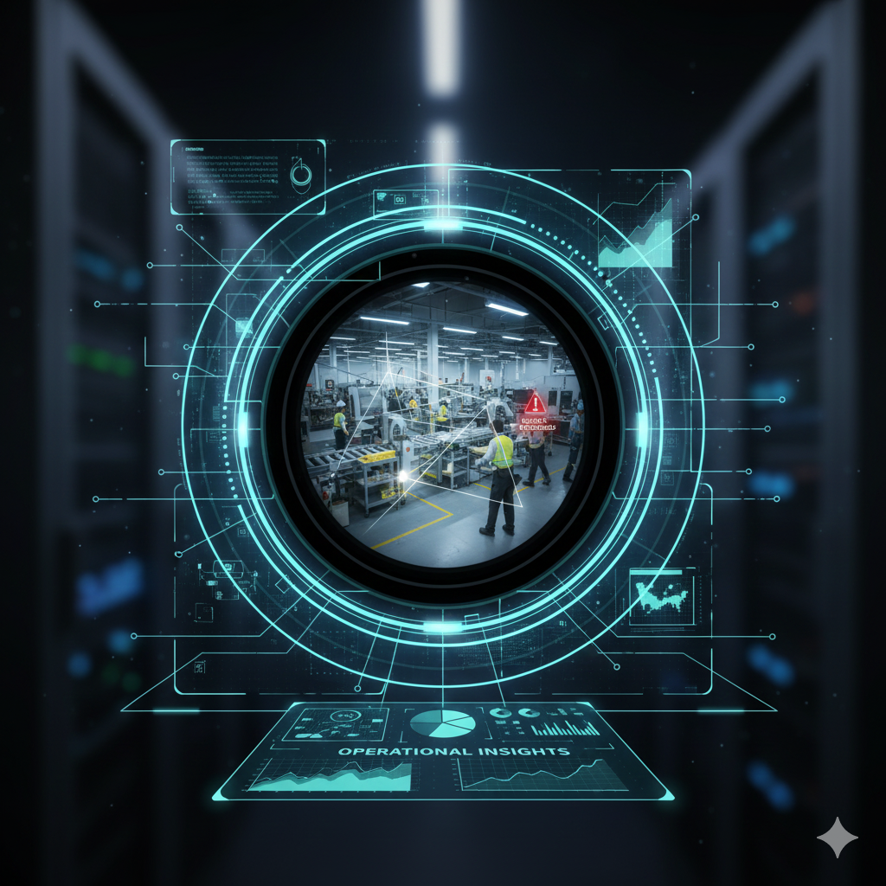
작업자 동선·설비 상태·품질 이상 패턴을 분석해 다운타임과 불량률을 줄입니다. Analyze worker movements, equipment conditions and quality anomalies to reduce downtime and defects.
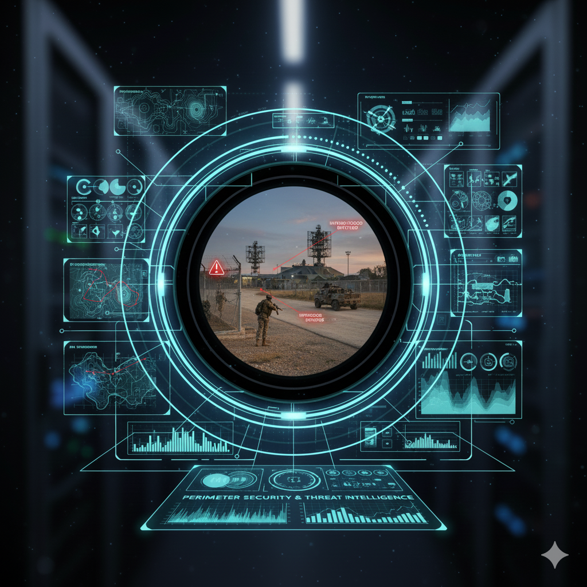
경계 구역 침입, 비인가 차량·인원 식별 등을 통해 중요 시설을 고도 보안 수준으로 보호합니다. Detect perimeter intrusions and identify unauthorized vehicles or personnel for high-level protection of critical sites.
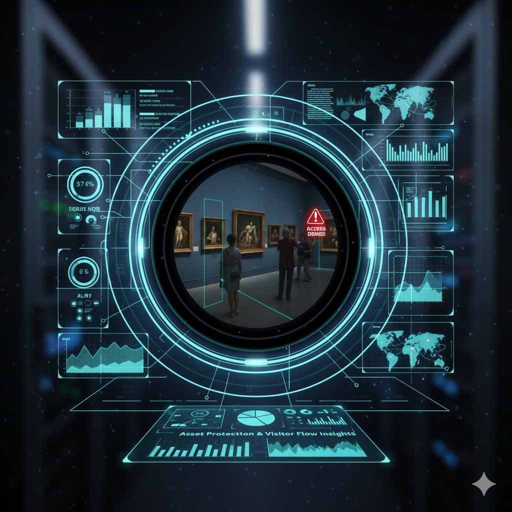
전시품 접근 패턴, 관람 동선을 분석해 자산 보호와 관람 경험을 함께 관리합니다. Analyze exhibit approaches and visitor flows to protect assets while managing the visitor experience.

거리·광장·교차로에서의 이상 행동과 사고 징후를 탐지해 도시 안전 센터와 연계할 수 있습니다. Detect abnormal behavior and incident signs in streets, squares and intersections to integrate with city safety centers.
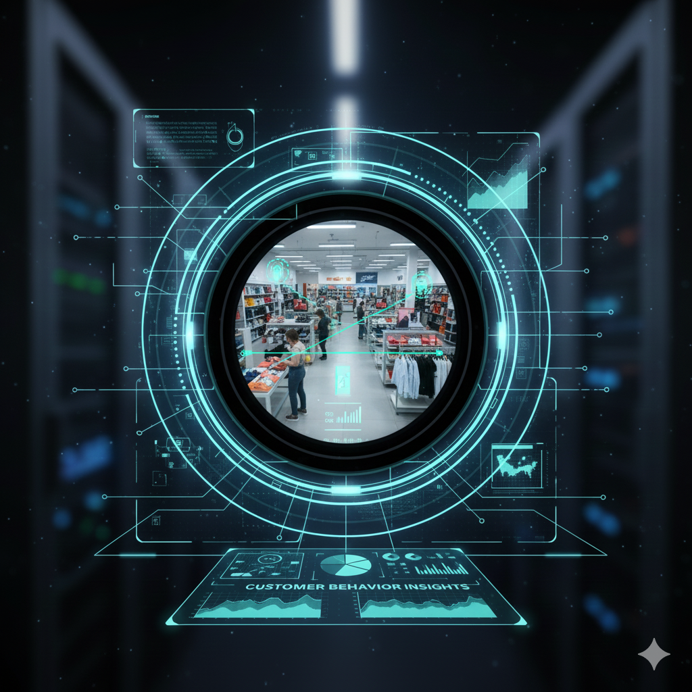
방문자 동선·체류 시간·매장 혼잡도를 분석해 매장 운영과 마케팅 전략에 활용합니다. Analyze visitor paths, dwell time and congestion to optimize store operations and marketing strategies.

교통·치안·환경 정보를 통합 분석해 도시 운영 효율과 시민 편의를 높입니다. Integrate traffic, safety and environmental data to improve city operations and citizen convenience.

승객 흐름, 대기열, 보안 검색 구역을 분석해 허브 전반의 안전과 처리량을 향상합니다. Analyze passenger flows, queues and security checkpoints to improve safety and throughput across hubs.
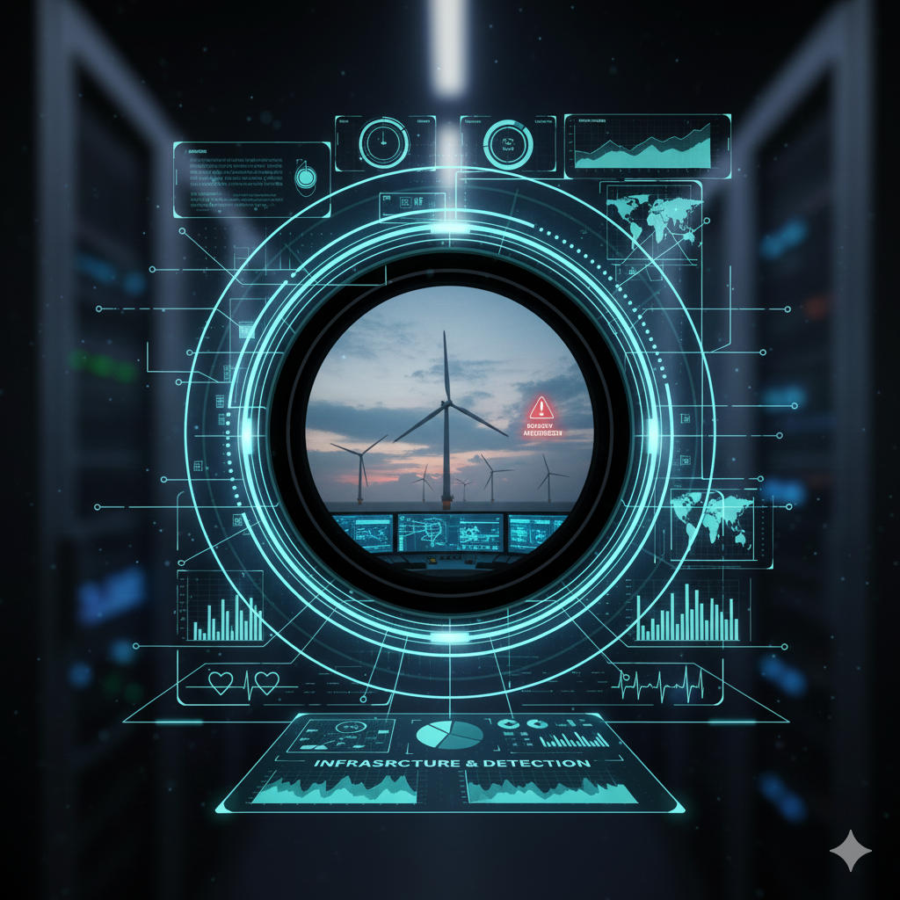
발전소, 변전소, 송·배전 설비를 영상으로 모니터링하여 이상 징후를 조기에 탐지합니다. Monitor power plants, substations and transmission facilities to detect anomalies at an early stage.